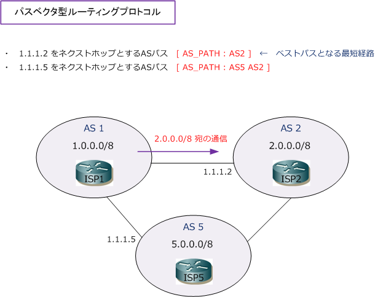

BGP ( Border Gateway Protocol )
BGP - EGPの一種
ルーティングプロトコルは、内部で使用するIGPと、外部で使用するEGPの大きく2つに分類できます。 RIPv2、EIGRP、OSPF、IS-ISは、AS（ Autonomous System ）内部で経路情報を交換するIGPです。 今回紹介するBGPは、AS間で経路情報を交換するEGPです。AS（ 自律システム ）とは、ある管理組織 にあるネットワークの集まりであり、例えば、ISPが管理しているネットワークは1つのASとなります。 ※ OSPFやEIGRPのASは 同じルーティングプロセスを使用する範囲を指す用語のことであり、BGPのASとは異質のものです。
EGPという名称が同じで紛らわしいですが、EGPには「BGP」と「EGP」の2つの経路制御プロトコルが あります。現在では「EGP」は使用されておらず、後継のBGP（ BGP version 4 ）が使用されています。
BGP - AS番号
BGPでは、インターネット上での各ASを識別するために番号を割り当てています。それがAS番号です。 ISP以外にも、大企業、学術研究機関なども1つのASが割り当てられており、AS番号の一覧はこちらで 確認することができます。AS番号はICANNという組織により、RIR（Regional Internet Registry）に ブロック単位で割り当てしています。日本ではJPINICやAPNICがAS番号の割り当てを管理しています。
AS番号は、以下の通りグローバルAS番号とプライベートAS番号の大きく2つに分類することができます。
| AS番号 | AS番号の範囲 | 用途 |
|---|---|---|
| グローバルAS番号 | 1 ～ 64511 | インターネット全体で一意のAS番号 |
| プライベートAS番号 | 64512 ～ 65535 | 組織内部で自由に使用できるAS番号 |
BGP - パスベクタ型ルーティングプロトコル
BGPは、パスベクタ型ルーティングプロトコルです。パスベクタ型では、AS内のルート情報に付加された パスアトリビュートを送信して最適経路を決定します。デフォルトでは、宛先ネットワークまでに経由する ASが少ない経路をベストパスとして使用します。下図では、AS1からAS2の「2.0.0.0/8」宛のパケットを 送信する時、BGPルータのISP1はASの通り道が少ない経路となるネクストホップとして「1.1.1.2」を選択。

BGP - 特徴
インターネット上のBGPが設定されているルータは、2016年時点で60万ルート以上をルーティングテーブル に保持していますが、転送プロトコルにTCPを使用して信頼性のあるルーティングアップデートを行います。 BGPでは定期的なルーティングアップデートは行わず、変更発生時にのみ差分アップデートを行っています。 また、BGPではパスアトリビュートという属性をルート情報に付加することによって、経路制御を行えます。
| BGPの特徴 | 説明 |
|---|---|
| 転送プロトコルにTCPを使用 | TCPポート179を使用し、TCP接続を行い信頼性のあるルーティングアップデートを実行 |
| 差分アップデート | 定期的なルーティングアップデートを行わず、変更発生時にのみ差分アップデートを実行 |
| パスアトリビュート | パスアトリビュートをルートに付加して、詳細なポリシーを定義したルーティングを実現 |
| ループフリー | AS-PATHリストを使用することで、ループフリーの構成を実現 |
| クラスレスルーティングプロトコル | CIDRによるルート集約、VLSMによるサブネット分割時の可変長マスクを実現 |
BGP - 4バイトAS番号（ 4 byte AS number ）
4バイトAS番号は、AS番号を従来の2バイトから4バイトに拡張したものです。2バイトのAS番号が枯渇する とみられており仕様策定されています。4バイトのAS番号は2バイトずつピリオドで区切りそれぞれを10進数 で表すことから、4バイトAS番号は「 0.0 」から「 65535.65535 」という値で表現されます。
以上の通り、BGPは同一の管理ポリシーにより管理されるネットワーク群であり、2バイト（2オクテット）か 4バイト（4オクテット）のAS番号により識別されます。